Introduction to Machine Learning
What is Machine Learning?
Machine Learning is a field of computer science that enables systems to learn from data without being explicitly programmed.
In traditional programming, you provide explicit instructions. In machine learning, the system learns the instructions from data.
Machine Learning is important for solving complex problems, automating tasks, and making predictions.
It has diverse applications like image recognition, natural language processing, fraud detection, recommendation systems, medical diagnosis, and more.
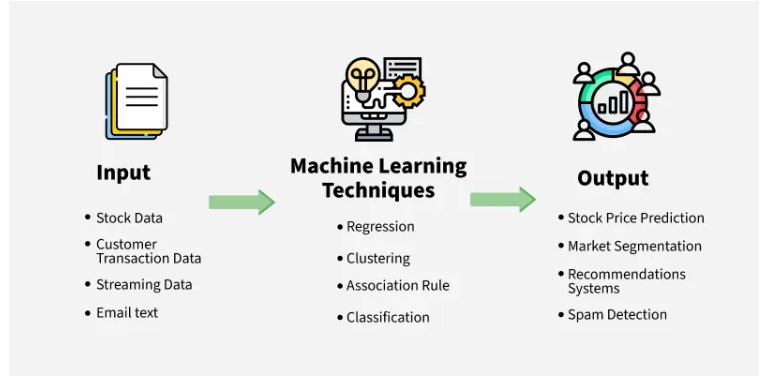
Types of Machine Learning
Supervised, Unsupervised, and Reinforcement Learning
Supervised Learning
Supervised learning involves training a model on labeled data, where the input and the desired output are known.
Common algorithms include linear regression, logistic regression, support vector machines (SVMs), decision trees, and random forests.
Examples include predicting housing prices based on features (regression) or classifying emails as spam or not spam (classification).
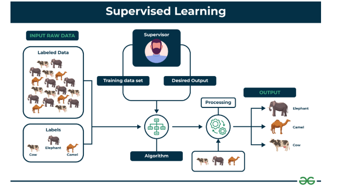
Unsupervised Learning
Unsupervised learning involves training a model on unlabeled data, where the goal is to discover patterns and relationships.
Common algorithms include clustering (k-means, hierarchical clustering), dimensionality reduction (principal component analysis - PCA), and association rule mining.
Examples include customer segmentation based on purchasing behavior or anomaly detection in network traffic.
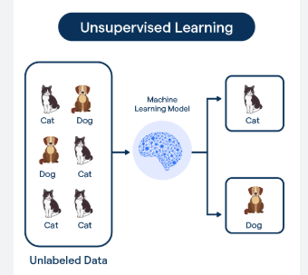
Reinforcement Learning
Reinforcement learning involves training an agent to make decisions in an environment to maximize a reward.
Key concepts include agents, environments, states, actions, rewards, and policies.
Examples include training a robot to navigate a maze or developing an AI for playing games like chess or Go.
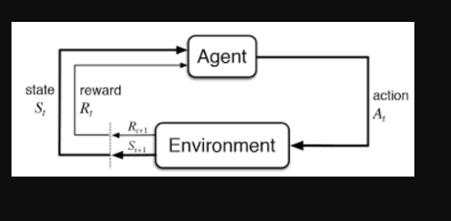
Key Machine Learning Concepts
Understanding the Fundamentals
Features: Features are individual measurable properties or characteristics of a phenomenon being observed and are important in ML models.
Data Splitting: It is important to split data into training, validation, and testing sets. The training set is used to train the model, the validation set is used to tune the model's hyperparameters and prevent overfitting, and the testing set is used to evaluate the model's performance on unseen data.
Overfitting and Underfitting: Overfitting occurs when a model learns the training data too well, resulting in poor performance on unseen data. Underfitting occurs when a model is too simple to capture the underlying patterns in the data.
Bias and Variance: High bias can cause a model to miss relevant relations between features and target outputs. High variance can cause overfitting.
Evaluation Metrics: Common evaluation metrics for different types of ML problems include:
- Regression: Mean Squared Error (MSE), R-squared
- Classification: Accuracy, Precision, Recall, F1-score, ROC AUC
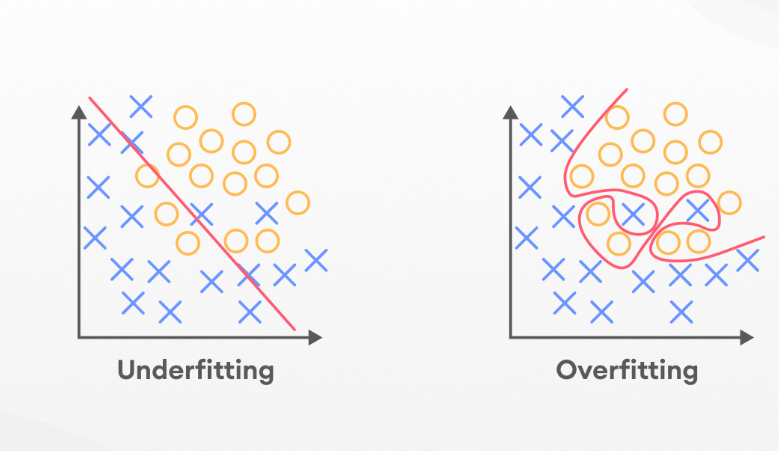
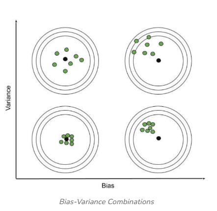
Supervised Learning in Detail
Diving Deeper into Supervised Learning
Linear Regression
The goal of linear regression is to find the best-fitting line that minimizes the sum of squared errors between the predicted and actual values.
The linear regression equation is: y = mx + b (or the multivariable version).
from sklearn.linear_model import LinearRegression
import numpy as np
# Sample data
X = np.array([[1], [2], [3], [4], [5]]) # Input feature
y = np.array([2, 4, 5, 4, 5]) # Target variable
# Create and fit the model
model = LinearRegression()
model.fit(X, y)
# Make predictions
new_X = np.array([[6]])
prediction = model.predict(new_X)
print(f"Prediction for X=6: {prediction[0]}")
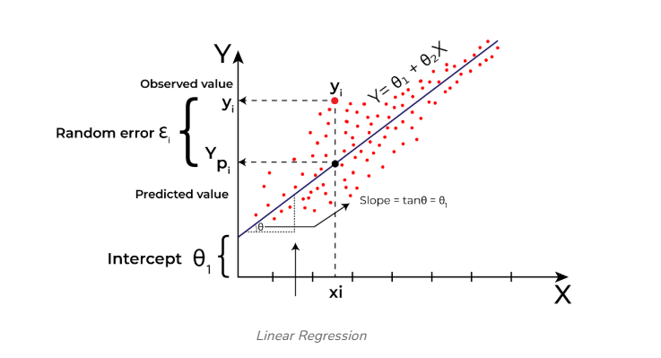
Logistic Regression
Logistic regression is used for binary classification problems. The sigmoid function plays a key role in predicting probabilities.
from sklearn.linear_model import LogisticRegression
from sklearn.model_selection import train_test_split
from sklearn.metrics import accuracy_score
# Sample data (replace with your actual data)
X = np.array([[1, 2], [2, 3], [3, 1], [4, 3], [5, 3], [6, 2]]) # Input features
y = np.array([0, 0, 0, 1, 1, 1]) # Target variable (0 or 1)
# Split data into training and testing sets
X_train, X_test, y_train, y_test = train_test_split(X, y, test_size=0.3, random_state=42)
# Create and fit the model
model = LogisticRegression()
model.fit(X_train, y_train)
# Make predictions
y_pred = model.predict(X_test)
# Evaluate the model
accuracy = accuracy_score(y_test, y_pred)
print(f"Accuracy: {accuracy}")
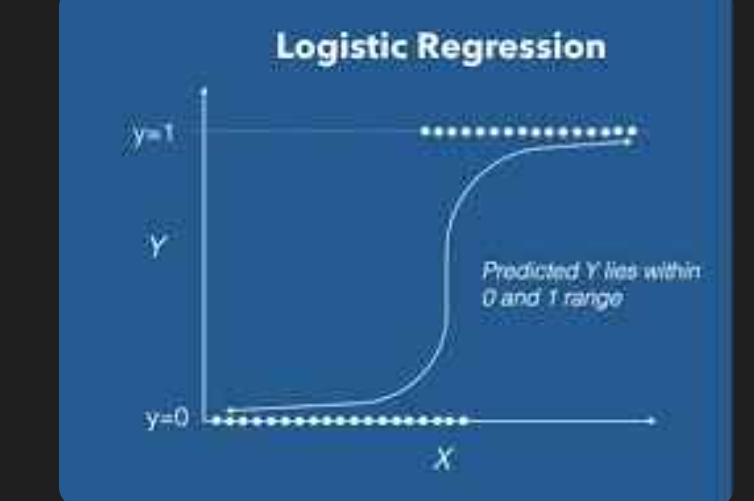

More Supervised Learning Algorithms
Exploring Advanced Supervised Learning Methods
Support Vector Machines (SVMs)
SVMs find the optimal hyperplane to separate data points. Different kernel functions (linear, polynomial, RBF) can be used.
from sklearn.svm import SVC
from sklearn.model_selection import train_test_split
from sklearn.metrics import accuracy_score
# Sample data (replace with your actual data)
X = np.array([[1, 2], [2, 3], [3, 1], [4, 3], [5, 3], [6, 2]]) # Input features
y = np.array([0, 0, 0, 1, 1, 1]) # Target variable (0 or 1)
# Split data into training and testing sets
X_train, X_test, y_train, y_test = train_test_split(X, y, test_size=0.3, random_state=42)
# Create and fit the model
model = SVC(kernel='linear') # You can change the kernel
model.fit(X_train, y_train)
# Make predictions
y_pred = model.predict(X_test)
# Evaluate the model
accuracy = accuracy_score(y_test, y_pred)
print(f"Accuracy: {accuracy}")
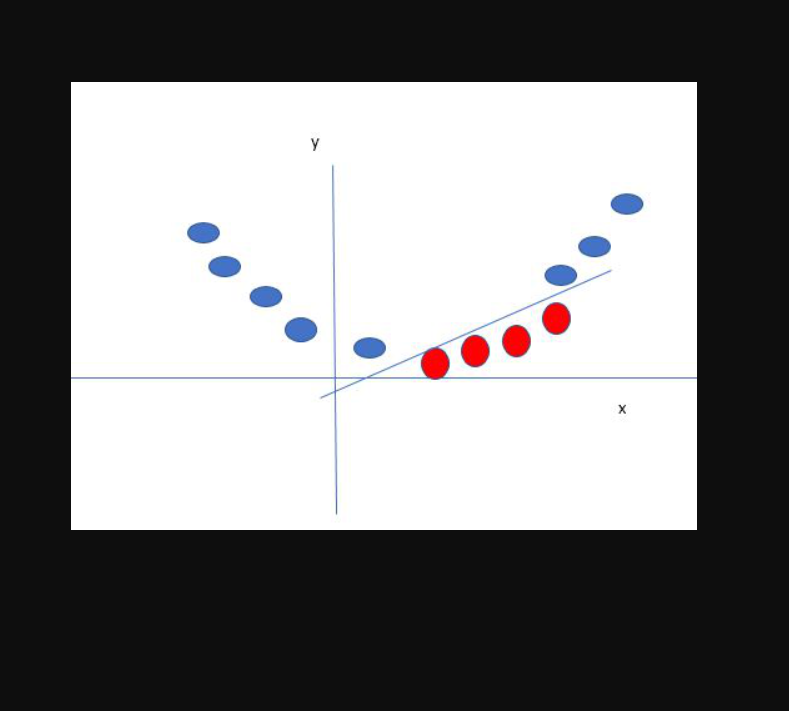
Decision Trees
Decision trees recursively partition the data based on feature values, using splitting criteria like Gini impurity or information gain.
from sklearn.tree import DecisionTreeClassifier
from sklearn.model_selection import train_test_split
from sklearn.metrics import accuracy_score
# Sample data (replace with your actual data)
X = np.array([[1, 2], [2, 3], [3, 1], [4, 3], [5, 3], [6, 2]]) # Input features
y = np.array([0, 0, 0, 1, 1, 1]) # Target variable (0 or 1)
# Split data into training and testing sets
X_train, X_test, y_train, y_test = train_test_split(X, y, test_size=0.3, random_state=42)
# Create and fit the model
model = DecisionTreeClassifier()
model.fit(X_train, y_train)
# Make predictions
y_pred = model.predict(X_test)
# Evaluate the model
accuracy = accuracy_score(y_test, y_pred)
print(f"Accuracy: {accuracy}")

Random Forests
Random forests combine multiple decision trees to improve accuracy and reduce overfitting, using techniques like bagging and feature randomness.
from sklearn.ensemble import RandomForestClassifier
from sklearn.model_selection import train_test_split
from sklearn.metrics import accuracy_score
# Sample data (replace with your actual data)
X = np.array([[1, 2], [2, 3], [3, 1], [4, 3], [5, 3], [6, 2]]) # Input features
y = np.array([0, 0, 0, 1, 1, 1]) # Target variable (0 or 1)
# Split data into training and testing sets
X_train, X_test, y_train, y_test = train_test_split(X, y, test_size=0.3, random_state=42)
# Create and fit the model
model = RandomForestClassifier(n_estimators=100) # You can adjust the number of trees
model.fit(X_train, y_train)
# Make predictions
y_pred = model.predict(X_test)
# Evaluate the model
accuracy = accuracy_score(y_test, y_pred)
print(f"Accuracy: {accuracy}")
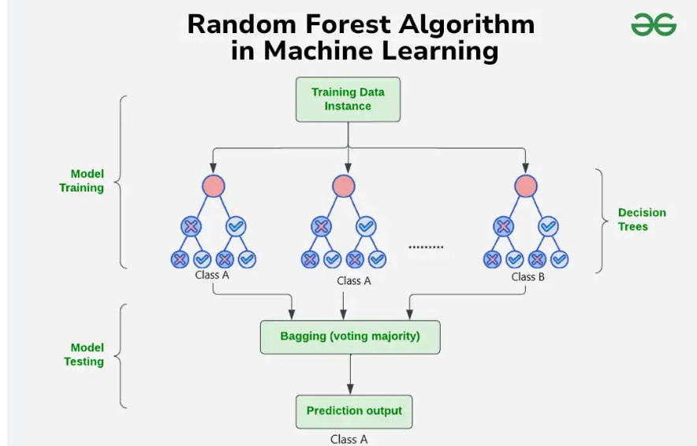
Unsupervised Learning in Detail
Exploring Patterns with Unsupervised Learning
Clustering (K-Means)
K-means clustering aims to partition data points into k clusters, where each point belongs to the cluster with the nearest mean (centroid).
The process involves initializing centroids and iteratively assigning points to clusters and updating centroids.
from sklearn.cluster import KMeans
import numpy as np
# Sample data
X = np.array([[1, 2], [1.5, 1.8], [5, 8], [8, 8], [1, 0.6], [9, 11]])
# Create and fit the model
kmeans = KMeans(n_clusters=2, random_state=0, n_init = 'auto') # Specify the number of clusters
kmeans.fit(X)
# Get cluster assignments and centroids
labels = kmeans.labels_
centroids = kmeans.cluster_centers_
print("Cluster labels:", labels)
print("Centroids:", centroids)
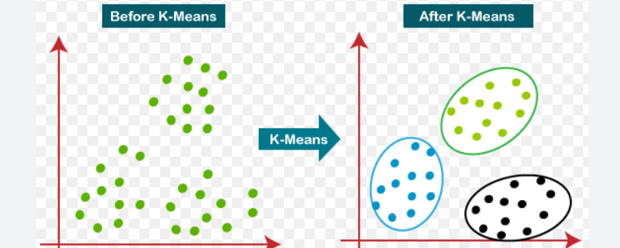
Dimensionality Reduction (PCA)
PCA aims to reduce the number of features while preserving the most important information.
It identifies principal components that capture the most variance in the data.
from sklearn.decomposition import PCA
import numpy as np
# Sample data
X = np.array([[1, 2, 3], [4, 5, 6], [7, 8, 9]])
# Create and apply PCA
pca = PCA(n_components=2) # Specify the number of components to keep
pca.fit(X)
# Transform the data
transformed_X = pca.transform(X)
print("Original data shape:", X.shape)
print("Transformed data shape:", transformed_X.shape)
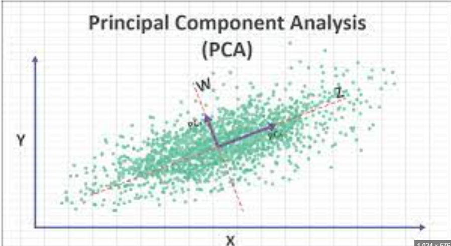
Reinforcement Learning Basics
Training Agents Through Interaction
Key Concepts
- Agent: The learner that interacts with the environment.
- Environment: The world in which the agent operates.
- State: The current situation of the agent.
- Action: A choice the agent can make.
- Reward: Feedback from the environment after an action.
- Policy: A strategy that the agent uses to determine which action to take in each state.
Q-Learning
Q-learning is a reinforcement learning algorithm that learns a Q-function, which estimates the expected reward for taking a particular action in a particular state.
It uses a Q-table to store the Q-values.
The Q-learning update rule is: Q(s, a) = Q(s, a) + α [R(s, a) + γ max Q(s', a') - Q(s, a)]
- α is the learning rate
- γ is the discount factor
- s' is the next state
- a' is the next action
import numpy as np
# Define the environment (simplified)
states = [0, 1, 2, 3]
actions = [0, 1] # Example: 0 - Left, 1 - Right
rewards = {(0, 0): -1, (0, 1): 0, (1, 0): 0, (1, 1): -1, (2, 0): 0, (2, 1): 10, (3, 0): -1, (3, 1): -1} # (state, action): reward
next_state = {(0, 0): 0, (0, 1): 1, (1, 0): 0, (1, 1): 1, (2, 0): 2, (2, 1): 3, (3, 0): 3, (3, 1): 3}
# Initialize Q-table
q_table = np.zeros((len(states), len(actions)))
# Q-Learning parameters
alpha = 0.1 # Learning rate
gamma = 0.9 # Discount factor
episodes = 100
# Q-Learning algorithm
for _ in range(episodes):
state = np.random.choice(states) # Start in a random state
for _ in range(10): # Small steps
# Choose an action (for simplicity, always exploit)
action = np.argmax(q_table[state, :])
# Get the reward and next state
reward = rewards[(state, action)]
next_state_val = next_state[(state, action)]
# Update Q-value
best_next_action = np.argmax(q_table[next_state_val, :])
q_table[state, action] = q_table[state, action] + alpha * (reward + gamma * q_table[next_state_val, best_next_action] - q_table[state, action])
# Move to the next state
state = next_state_val
print("Q-table:")
print(q_table)
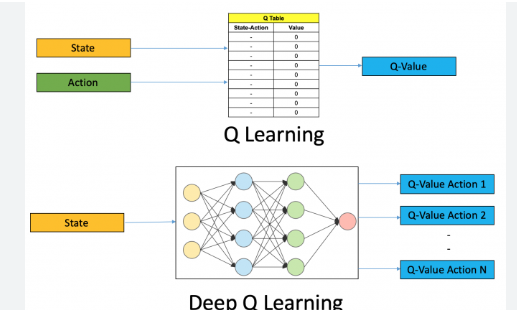
Model Selection and Training
Choosing the Right Model and Training It Effectively
Model Selection
Selecting the right model is crucial for achieving good performance. Consider factors like the type of problem, the size and nature of the data, and the interpretability requirements.
- Consider the problem type: Choose classification models for classification tasks and regression models for regression tasks.
- Understand the data: Explore the data to understand its characteristics, such as the number of features, the presence of missing values, and the distribution of the target variable.
- Consider model complexity: Start with simpler models and gradually increase complexity if needed.
- Consider interpretability: If interpretability is important, choose models that are easy to understand, such as linear regression or decision trees.
Training Process
The training process involves feeding the model with data and adjusting its parameters to minimize the error.
- Data Preprocessing: Clean and prepare the data by handling missing values, scaling features, and encoding categorical variables.
- Feature Engineering: Create new features from existing ones to improve model performance.
- Hyperparameter Tuning: Optimize the model's hyperparameters using techniques like grid search or random search.
- Cross-Validation: Use cross-validation to evaluate the model's performance on multiple subsets of the data.
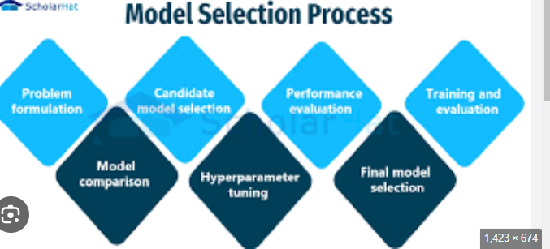
Evaluation and Deployment
Assessing Model Performance and Putting It into Action
Model Evaluation
Evaluating the model's performance is essential to ensure that it generalizes well to unseen data.
- Choose appropriate metrics: Select evaluation metrics that are relevant to the problem and the business goals.
- Use a hold-out set: Evaluate the model on a hold-out set that was not used during training or validation.
- Consider different evaluation scenarios: Evaluate the model under different conditions to assess its robustness.
Model Deployment
Deploying the model involves making it available for use in a real-world application.
- Choose a deployment platform: Select a deployment platform that meets the requirements of the application, such as cloud-based platforms or on-premise servers.
- Integrate the model with the application: Integrate the model with the application by creating an API or embedding the model directly into the application code.
- Monitor the model's performance: Monitor the model's performance over time to detect any degradation and retrain the model if necessary.
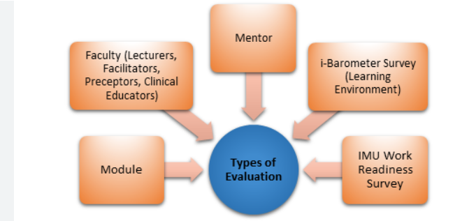
Ethical Considerations and Future Trends
Addressing Ethical Concerns and Looking Ahead
Ethical Considerations
Machine learning models can have a significant impact on society, so it's important to consider the ethical implications of their use.
- Bias: Address bias in the data and the model to ensure fairness and prevent discrimination.
- Transparency: Make the model's decision-making process transparent and explainable.
- Accountability: Establish accountability for the model's decisions and actions.
Future Trends
The field of machine learning is constantly evolving, with new algorithms and techniques being developed all the time.
- Deep Learning: Deep learning is a rapidly growing field that has achieved state-of-the-art results on many tasks.
- Explainable AI (XAI): XAI aims to make machine learning models more transparent and understandable.
- Federated Learning: Federated learning enables training models on decentralized data without sharing the data itself.